9. Agafar pomes¶
En aquesta pràctica programarem un joc que consisteix a agafar pomes amb un gat i evitar els raigs que maten. El gat es mourà amb les tecles dreta i esquerra. Quan el gat perd les seves tres vides, el joc s’acabarà.
{kind=link}
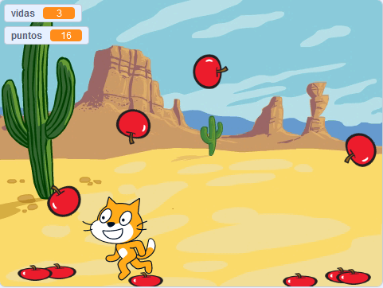
; BR |
Comencem el | Editor_de_scratch |.
; BR |
Premeu el botó d'idioma | Botó-Idioma | A la barra superior i va triar ** espanyol **.
; BR |
Ara escollim un fons adequat per al nostre joc. Canviem el fons d’escenari per ** un desert **.
Premeu el botó Trieu un fons | Select-Fondo |.
Estem buscant a la secció exterior ** **.
I seleccionem el fons ** Desert **.
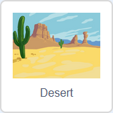
; BR |
Canviem el nom de l'objecte per ** cat **.
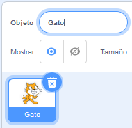
; BR |
Creem la variable ** vides ** que mantindrà el nombre de vides que té el gat. Quan valgui aquesta variable, el programa s’acabarà.
Premeu el botó variable | Botó-Variables |,
Premeu per crear una variable | Botó-Crear-Variable |.
Canviem el nom de la variable a ** viu **
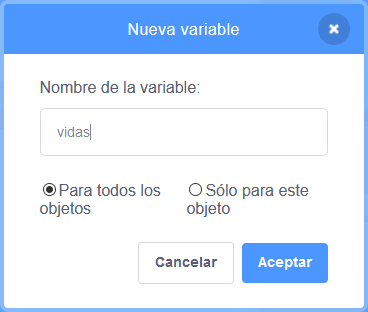
Finalment, feu clic al botó ** acceptar **
; BR |
Ara programem les instruccions d’iniciació per a l’objecte CAT. Aquest programa donarà al gat tres, mostrarà el valor de la pantalla, situarà el gat sota la pantalla i l'estil de rotació dreta i esquerra.
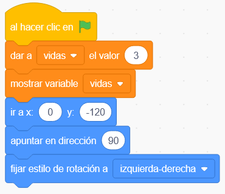
; BR |
Continuem donant el moviment del gat cap a un costat i un altre. El programa següent comprova si s'ha premut una tecla de fletxa esquerra o fletxa dreta i, si és així, mou el gat en una o altra direcció.
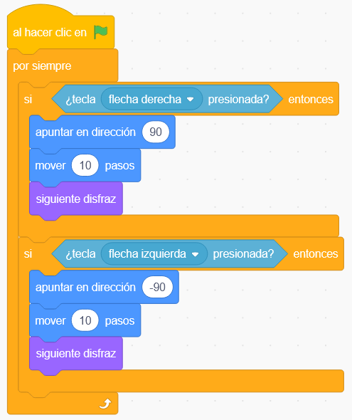
; BR |
Premeu la bandera verda | Flag-Verde | Per provar el funcionament del programa.
; BR |
Ara creem la variable ** punts ** que mantindrà el nombre de punts que hem aconseguit en capturar pomes.
Premeu el botó variable | Botó-Variables |,
Premeu per crear una variable | Botó-Crear-Variable |.
Canviem el nom de la variable per ** punts **
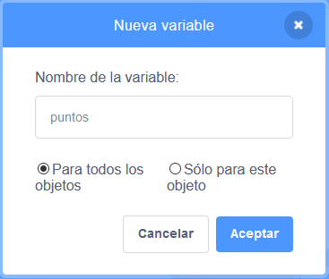
Finalment, feu clic al botó ** acceptar **
; BR |
A continuació, afegim un personatge nou, un ** Apple **.
Premeu el botó Trieu un objecte | Select-objecte |.
Estem buscant al menjar ** **.
i seleccionem l'objecte ** Apple **.
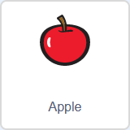
; BR |
Crearem una altra disfressa per a la poma, una poma aixafada. Primer anem a la pestanya de disfresses | Piñania-Disfraces |
Després doblem la disfressa de poma.
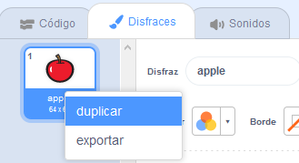
; BR |
Ara seleccionem la disfressa duplicada i aixafem -la.
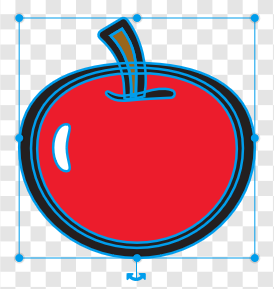
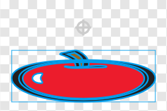
; BR |
Ja podem realitzar el programa Apple dins de la pestanya Codi | Paracania-Codigo | de la poma.
Primer anem a amagar la poma, assignem zero als punts i creem clons de la poma per aparèixer a la pantalla, mentre que el gat tingui vides.
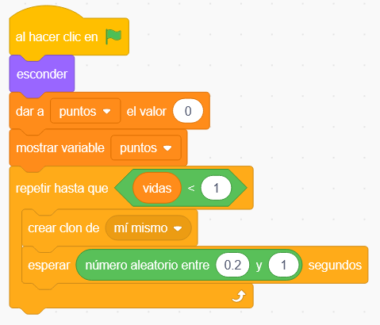
Abans de realitzar el programa següent, el bloc s'ha de definir "dins dels meus blocs | Button-Misblos | Premeu " Creeu un bloc "| Button-Crear-Block | i en nom del bloc que vam escriure " ** Fall Soil ** ".
El següent programa apareixerà cada clon de la poma a la part superior en una posició aleatòria, de manera que després caigui cap a terra.
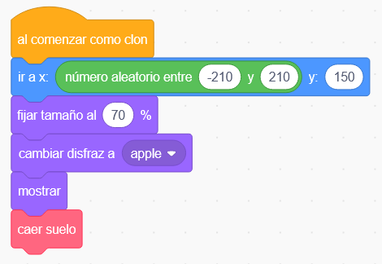
Finalment, programem el bloc que fa que la poma caigui a terra. En cas de tocar el gat, un punt augmentarà i el clon de poma desapareix. Si el clon de poma toca el terra, es triturarà.
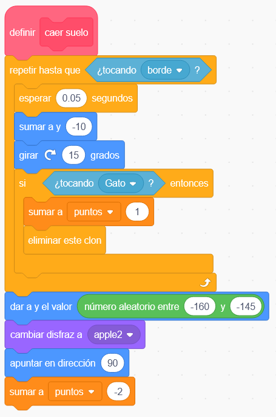
; BR |
Premeu la bandera verda | Flag-Verde | Per provar el funcionament del programa.
; BR |
Afegim un objecte nou, un ** ray **.
Premeu el botó Trieu un objecte | Select-objecte |.
Estem buscant a la secció ** tot **.
i seleccionem l'objecte ** Lightning **.
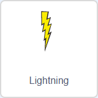
; BR |
Ara realitzem el programa per generar clons de llamps cada pocs segons.
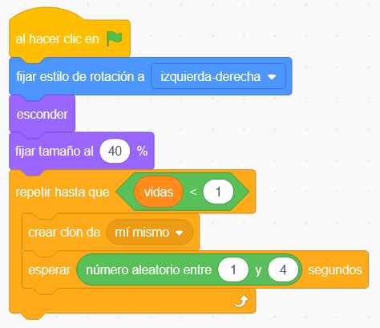
; BR |
Cada vegada que es genera un clon, el seu comportament serà el següent.
Passarà des de la part superior de la pantalla. Si és el gat, les vides es redueixen per un. Si la vora inferior toca, el llamp desapareix.
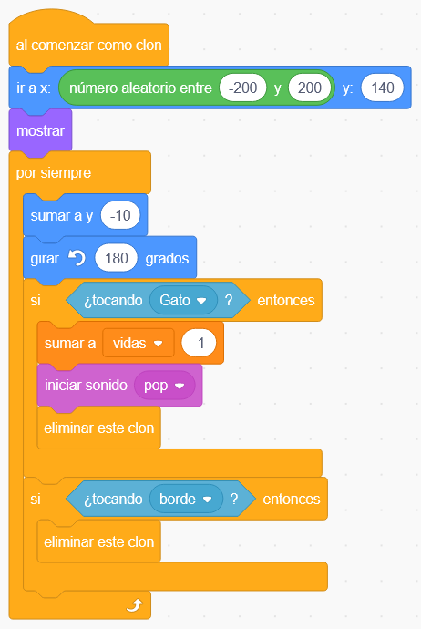
; BR |
Finalment, programem el gat per morir quan les vides arriben a zero. Primer seleccionem l'objecte CAT.
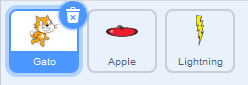
A continuació, afegim el programa.
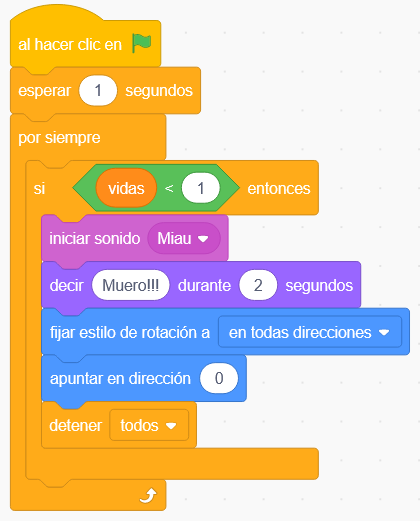
; BR |
Premeu la bandera verda | Flag-Verde | Per provar el funcionament del programa.
; BR |
{kind=link}
{kind=link}
{kind=link}
{kind=link}
{kind=link}
{kind=link}
{kind=link}
{kind=link}
Reptes¶
Afegiu un personatge nou que elimini vides igual que els llamps. Aquest nou personatge hauria d’aparèixer al cap de deu segons.
; BR |
Modifiqueu el programa de manera que el nombre de raigs augmenti amb el pas del temps, de manera que el joc es faci cada cop més difícil.
Per aconseguir -ho, heu de crear una nova variable anomenada Time_rayos. La variable s’ha d’iniciar a 2 (dos segons) en prémer la bandera verda. Al cap de 10 segons, canviarem el valor de la variable a 1 (un segon). Al cap de deu segons més, canviarem el valor de la variable a 0,5 (mig segon).
Perquè els raigs apareguin a diferents velocitats, heu de canviar el temps d’espera entre la creació dels rajos pel valor de la variable `` `` rare_trey '.